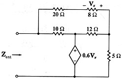

B05 DC analysis: Find input resistance of a net with dependent source
Question. Given the following net, find the entry resistance.

Solution:
There are different ways to solve this problem using Symbulator. I'll present here the easiest way, using one of the latest tools of Symbulator: thevenin(). This tool will provide us with the Zth, which is the input impedance of the circuit.
1) Label nodes and elements. Define a variable containing circuit description. I used this description:
"r10,1,2,10; r12,2,3,12
; r5,3,0,5; r20,1,4,20; r8,3,4,8; ed,2,0,0.6*vr8" àcir2) Run the Thevenin/Norton tool:
sq
\thevenin(cir,1,0)
When asked, select DC (direct current) analysis.
3) Now, find the value you need.
zth
6.705
Answer: The answer obtained is the right one.